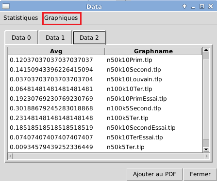
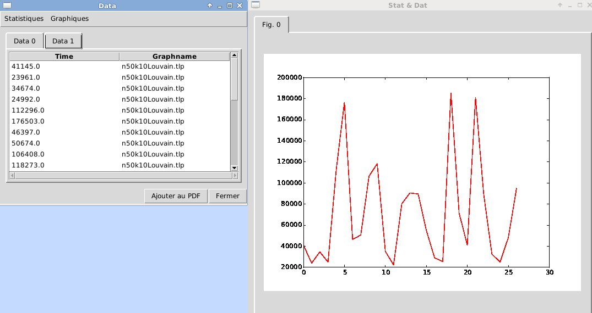
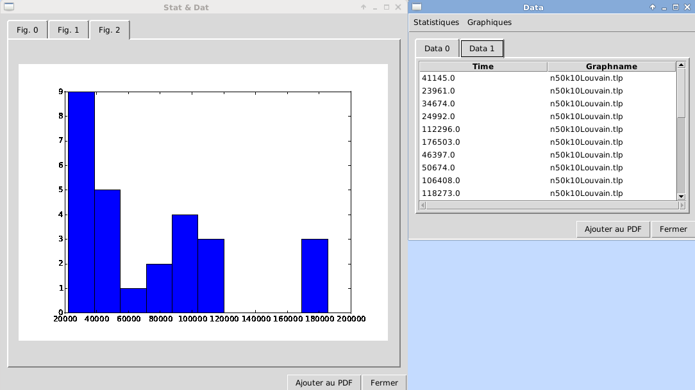
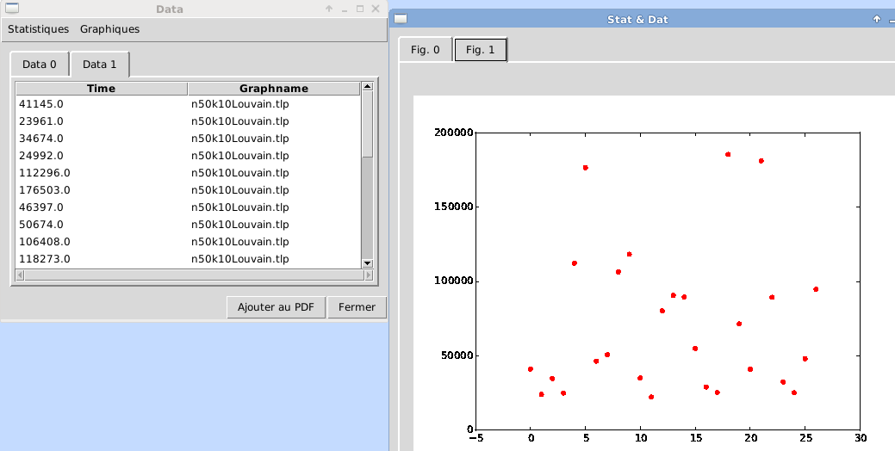
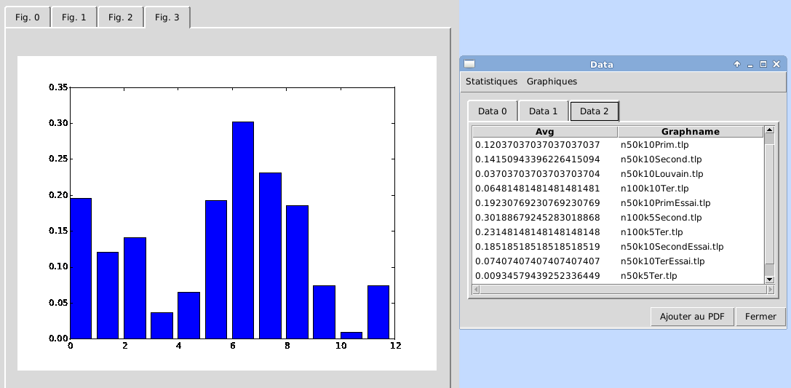
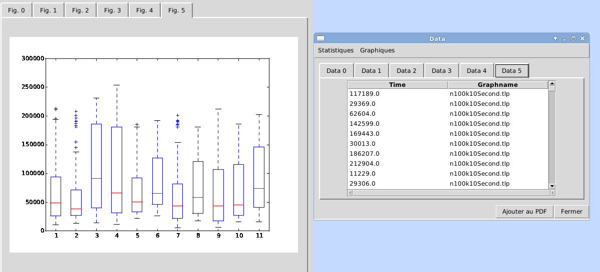

Création des graphiques

La création des graphiques se fait depuis la fenêtre d'affichage des données : 
 Histogramme, Dot-Plot, Courbes
Histogramme, Dot-Plot, Courbes
SELECT is failed AS Error_Rate_n100k10Louvain
FROM ref.donnee
WHERE graphname = 'n100k10Louvain.tlp'



- Diagramme en bâtons
Pour afficher un diagramme en bâton, vous devez regrouper chaque échantillon et calculer la moyenne de chacun d'entre eux . Vous devez également penser à placer les valeurs chiffrées à gauche :
SELECT AVG(is failed), graphname
FROM ref.donnee
GROUP BY graphname

- Boîte à moustaches (Boxplot)
Veillez à bien utiliser un ORDER BY pour distinguer les données en plusieurs groupes et placez les valeurs chiffrées à gauche, les chaînes de caractère à droite. Si vous utilisez plusieurs caractéristiques pour distinguer les groupes, placer la caracatéristique la plus 'précise', le plus à droite possible. Exemple d'une requête dont la caractéristique la plus précise est 'usedview') :
SELECT Time, graphname
FROM ref.donnee
ORDER BY graphname

Stat'nDat - 11 Mai 2015 Accueil Compte-rendu PDF